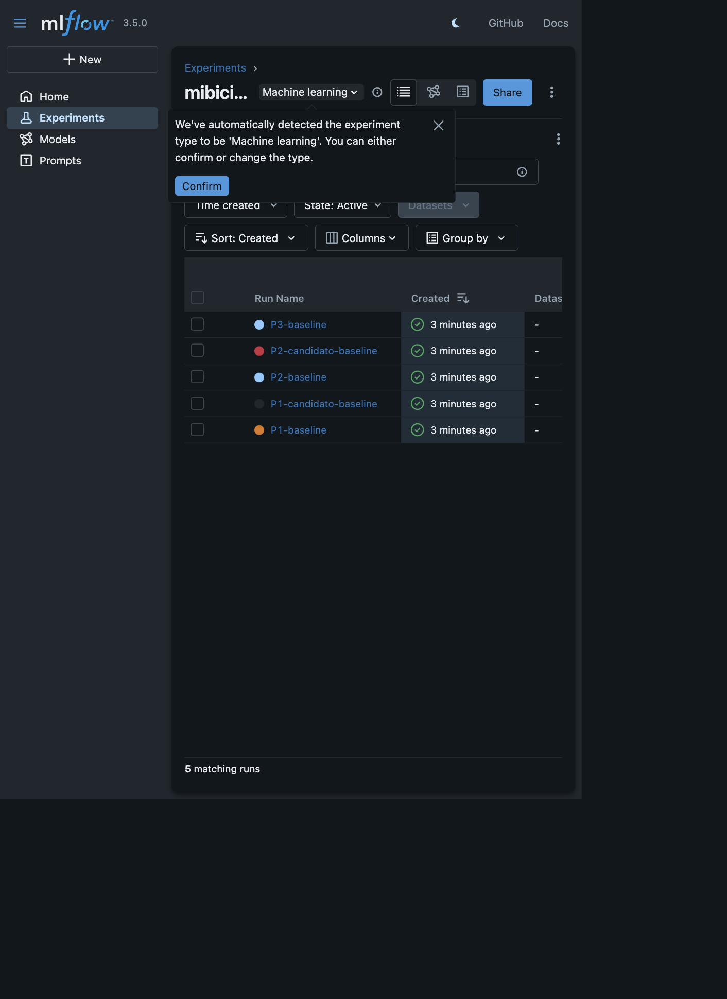
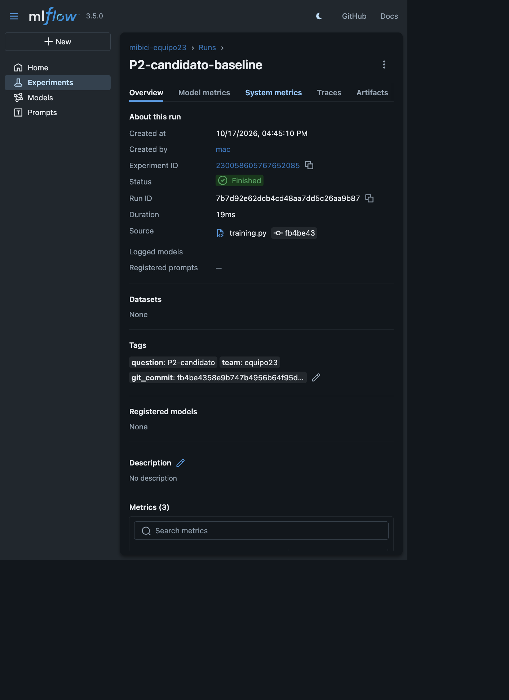
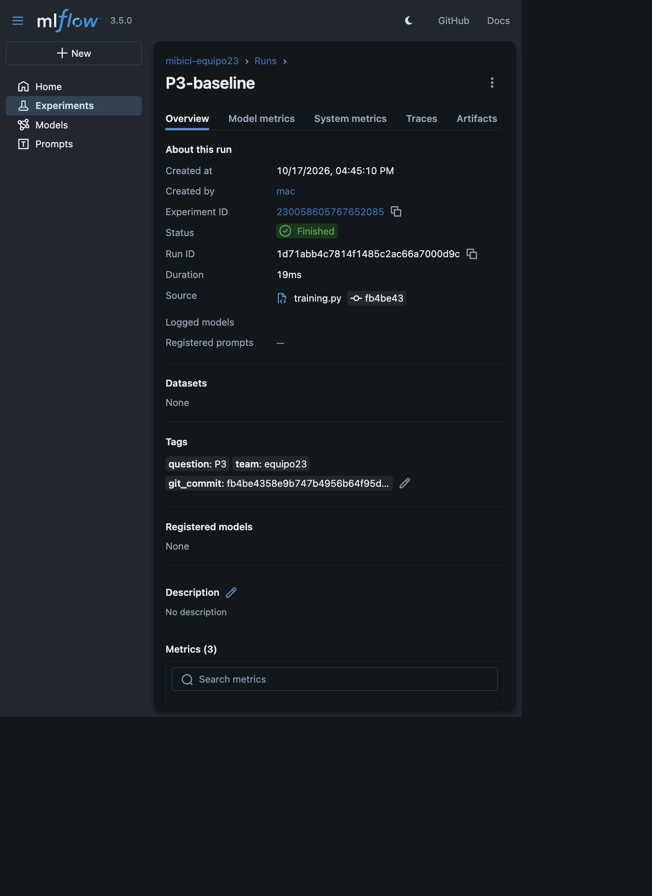
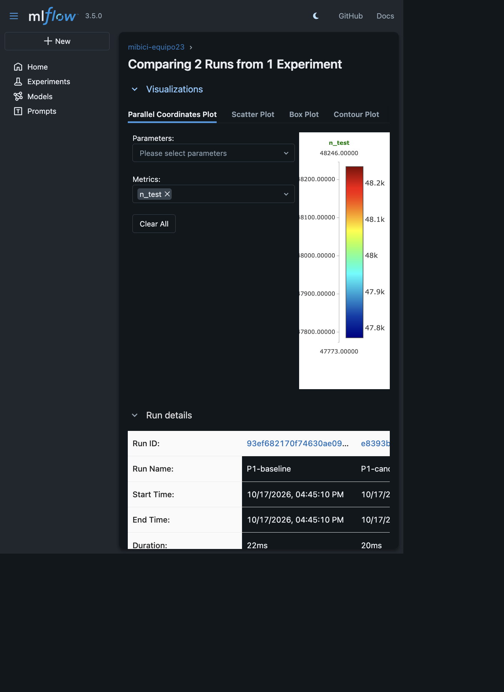

TC5061
17 de octubre de 2026
El proyecto propone una solución reproducible de Machine Learning para las tres preguntas operativas de MiBici:
| Pregunta | Tarea | Usuario | Decisión |
|---|---|---|---|
| P1. ¿Cuántos viajes se iniciarán? | Regresión | Operador | Asignar flota y personal |
| P2. ¿Habrá riesgo de saturación? | Clasificación | Rebalanceo | Priorizar inspección o traslado |
| P3. ¿Qué estaciones comparten patrones? | Clustering | Planeación urbana | Detectar perfiles y zonas |
La unidad de análisis es estación-día para P1 y P2, y estación-periodo para P3. P1 predice los viajes del día siguiente. P2 construye una etiqueta proxy de riesgo futuro a partir de demanda/capacidad, porque los datos abiertos no contienen inventario histórico real. P3 agrupa estaciones por uso, capacidad y ubicación.
La fuente es el portal oficial de Datos abiertos de
MiBici. Se descargaron 21 archivos de viajes, de enero de 2025 a
septiembre de 2026, y el catálogo nomenclatura_2026_09.csv.
La consolidación contiene 7,894,097 viajes y 484 estaciones.
El proyecto usa las variables de viaje necesarias para fechas, horas, origen, destino y duración, además de capacidad, latitud y longitud del catálogo. Los identificadores de usuario no se usan como variables ni se publican.
Los CSV grandes no se suben a Git. El mecanismo de versionado es references/data_manifest.csv,
que registra archivo, filas, bytes y SHA-256. La ingesta reconstruye
data/processed/ desde data/raw/ y los nuevos
runs de MLflow registran el hash del manifiesto como
data_version. DVC no es requisito explícito de la
rúbrica.
La ingesta está disponible en src/mibici/dataset.py y
src/mibici/ingestion.py. Normaliza columnas, prueba
codificaciones utf-8, utf-8-sig,
cp1252 y latin1, concatena los viajes y
conserva el catálogo más reciente.
PYTHONPATH=.:src python -m mibici.dataset
PYTHONPATH=.:src python -m mibici.trainingfeatures.py genera agregaciones estación-día, lags de 1
y 7 días, media móvil de 7 días, variables calendario, capacidad y
coordenadas. Las particiones de P1 y P2 son cronológicas 80/20 para
evitar fuga de información.
| Pregunta | Baseline | Candidato | Métricas |
|---|---|---|---|
| P1 | Media histórica por estación | HistGradientBoostingRegressor | MAE, RMSE |
| P2 | Clase mayoritaria | LogisticRegression balanceada | Accuracy, F1 |
| P3 | — | K-Means, k=4 | Silhouette |
Resultados con datos reales:
| Run | Resultado |
|---|---|
| P1 baseline MAE | 11.6304 |
| P1 candidato MAE | 6.5447 |
| P1 candidato RMSE | 12.4127 |
| P2 baseline accuracy / F1 | 0.6244 / 0.7688 |
| P2 candidato accuracy / F1 | 0.8282 / 0.8499 |
| P3 silhouette | 0.4982 |
Portal MiBici → data/raw/ →
dataset.py/ingestion.py →
data/processed/ → features.py → P1/P2/P3 →
MLflow Tracking → reports/figures/. Git conserva código y
documentación; el manifiesto SHA-256 identifica el snapshot de
datos.
El experimento es mibici-equipo23. Incluye los runs
P1-baseline, P1-candidato-baseline, P2-baseline, P2-candidato-baseline y
P3-baseline. Cada run registra parámetros, métricas, etiquetas de
equipo/pregunta/commit y artefactos.




El repositorio separa data/, notebooks/,
src/mibici/, models/, reports/ y
references/. El README documenta GitHub Flow, dependencias
y reproducción. Los CSV, mlruns/, modelos serializados y
credenciales están excluidos mediante .gitignore.
La entrega final debe incluir este PDF, el enlace al repositorio accesible para el profesor y la evidencia de colaboración de GitHub: rama principal protegida, commits de los cuatro integrantes, Pull Requests y revisiones.
Consultar referencias_apa7.md y fuentes.md para las referencias
completas y las fuentes mensuales.